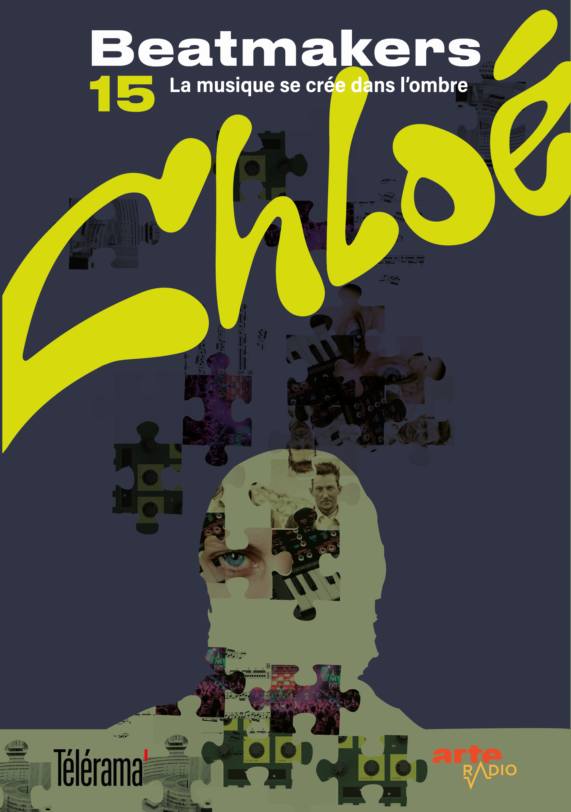
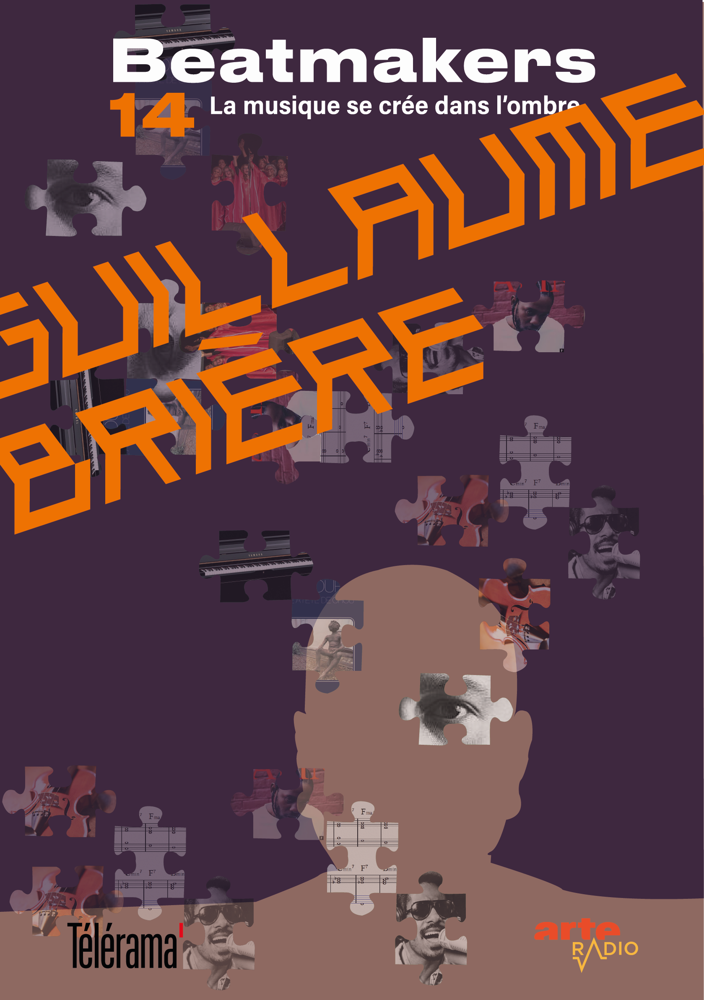
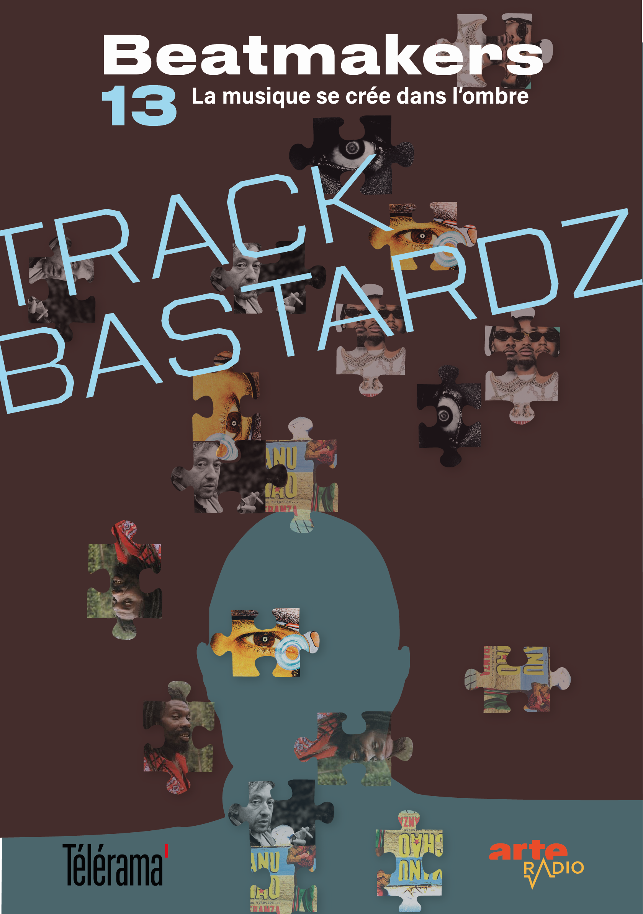

Basé sur le podcast d'Arte Radio "La musique se crée dans l'ombre", Arte Radio et Télérama s'associent afin de proposer une version écrite du podcast, disponible en kiosque. Chaque numéro doit rendre compte des spécificités du beatmaker concerné tout en illustrant la phrase phare du podcast "la musique se crée dans l'ombre"
  